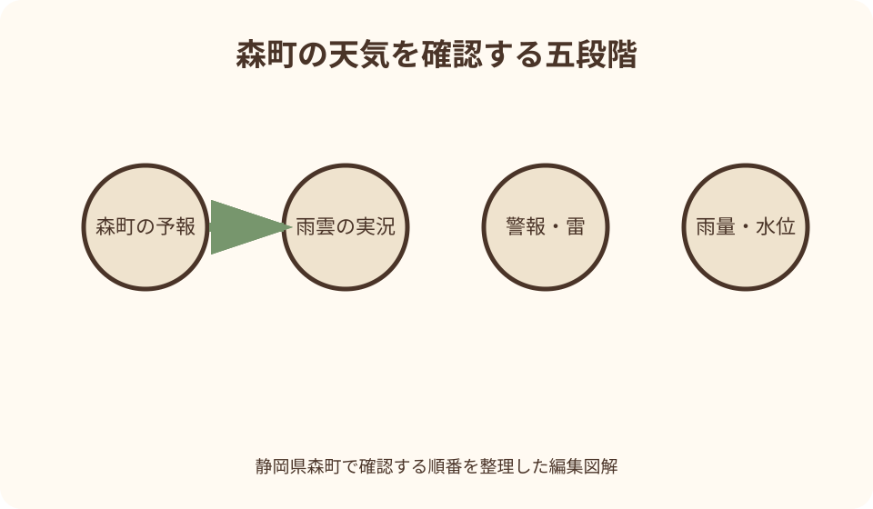
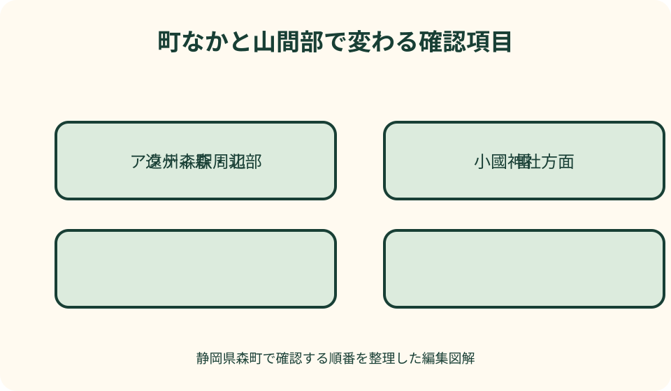

天気・雨雲・防災｜最終確認 2026-08-10
静岡県森町の天気・雨雲レーダー確認法｜山間部・雷・川の予定まで判断
静岡県森町の天気は、一つの晴れ・雨マークだけでは旅程に落とし込めません。遠州森駅周辺の町なか、小國神社方面、アクティ森やさらに北の山間地では、同じ時刻でも雨の降り方、雷との距離、道路や川の影響が違うことがあります。予報を入口に、雨雲、警報・雷、水位、町と施設の発表へ進む確認順を決めておくと、出発を急がずに済みます。

編集イラスト森町の天気は一地点の記号で決めない
最初に気象庁の天気予報で、対象が静岡県周智郡森町かを確かめます。同名の自治体や広い東海地方の予報を、町の予定へそのまま当てはめません。
予報の晴れや雨は地域と時間帯をまとめた表現です。訪問先の入口で一時的に晴れていても、午後の山間部まで降らないという意味ではありません。
森町公式の観光案内には、町なかの散策だけでなく、花めぐり、北部のハイキング、体験施設、川に近い場所が含まれます。目的地ごとに天候の影響が変わります。
自宅の天気アプリに表示された降水確率だけで出発を決めず、森町を地図上で開き、訪問する時間帯と場所を合わせて見ます。
確認の目的は晴れる根拠を集めることではありません。屋内へ切り替える時刻、帰路を早める条件、最初から延期する条件を家族で共有することです。
町なか・谷沿い・北部山間地を分ける
遠州森駅や役場周辺の町なかと、太田川の上流側、丘陵や山道では、雲のかかり方や雨の始まる時刻が同じとは限りません。地名を一つ追加して確認します。
小國神社方面へ向かう場合は、森町全体の予報に加え、現地公式の案内と道路状況を見ます。境内の木陰が多いことは、雷や強風の影響が小さいという意味ではありません。
アクティ森や北部へ進む日は、目的地だけでなく途中の谷沿い道路も対象です。目的地が小雨でも、往復経路で強い雨や規制があれば行程は成立しません。
雨雲レーダーを拡大し過ぎると、森町の南北関係や雲の進行方向を見失います。まず広域で雲の列を見てから、町内の予定地点へ段階的に拡大します。
現在地表示がずれている場合があるため、端末の青い点だけに頼りません。遠州森駅、目的施設、太田川など読みやすい地物を基準に位置を合わせます。
第一段階は予報と警報級の可能性
数日前の計画では、気象庁の週間予報と静岡県の気象情報から、雨や風が強まる可能性がある日を把握します。ここでは細かな到着時刻を確定しません。
前日には森町の天気予報と警報級の可能性を確認します。警報がまだ発表されていないことと、屋外予定を実施できることは同じではありません。
当日朝は発表時刻を見ます。前夜に保存した画面ではなく、再読み込みした公式ページから予報の変化と気象情報の補足を読みます。
府県気象情報には、大雨や雷の見通しを補足する説明が出ることがあります。アイコンだけを見て本文を飛ばすと、強まる時間帯や注意点を落とします。
予報は出発前の全体設計に使い、現地で近づく雨を捉える役割は雨雲の動きへ渡します。一つの画面にすべての判断を求めません。

第二段階は雨雲の実況と短時間予測
気象庁の雨雲の動きでは、表示が実況か予測か、基準となった時刻はいつかを先に読みます。再生中の未来画面を現在の雨と取り違えないようにします。
過去から現在までを動かして、雨域の方向、速さ、発達・衰弱を見ます。最後の一枚に雨色がないだけで、次の雲が来ないとは決めません。
短時間予測は移動の参考であり、個々の寺院、林道、川原で降り始める分単位の約束ではありません。予測が変わる余地を残して出発を判断します。
レーダーには観測休止や地形等による誤差があり、実際より強く・弱く見える場合があると気象庁が説明しています。無色の地点を安全区域とは呼びません。
森町だけを切り抜かず、上流側と雲が流入する側を画面に残します。目的地のピンが雨色の隙間に入っていても、周囲の雨域が連続していれば再確認を続けます。
第三段階は警報・注意報と雷を重ねる
雨雲を見た後は、森町に発表中の大雨、洪水、雷、強風などの警報・注意報を開きます。雨だけを選び、雷や風の情報を隠したままにしません。
雷活動度は、雲の色と別の情報です。降水が弱く見える場所でも雷の影響が考えられるため、屋外作業、花の撮影、林内散策では両方を見ます。
雷鳴が聞こえる、空が急に暗くなる、冷たい風が吹くなど現地の変化があれば、端末表示の更新を待って活動を続けません。施設管理者の案内に従い屋内へ移ります。
注意報を『警報ではないから実施』と読むのは不適切です。参加者の年齢、退避先までの距離、主催者の規定に照らし、予定を小さくする材料にします。
警報等が解除されても、川の増水、倒木、ぬかるみ、交通の乱れが残る場合があります。解除時刻を観光再開の合図にはしません。
第四段階は雨量・河川水位・町の発表
強い雨や長雨では、静岡県のサイポスレーダーで県内の雨量と河川水位を確認します。雨雲の色を、太田川の状態へ直接置き換えません。
河川水位は観測地点ごとの値です。上流か下流か、支川か本川か、値が更新されているかを見て、森町全域を一つの数字で代表させません。
雨が弱まった後に上流から水が集まることがあります。いま頭上で降っていないことを理由に、川辺の活動を始めたり再開したりしません。
森町公式の防災情報には、気象庁、県の河川情報、危険度分布等への入口があります。町の避難情報や施設開設情報が出た場合は、観光予定より上位に置きます。
データが欠測、更新停止、混雑で表示不能のときは、値が安定しているのではなく確認材料が減っています。予定を縮小し、町の公式発信や放送へ切り替えます。

花めぐり・寺社撮影は足元と風まで見る
桜、あじさい、ききょう、萩、紅葉は、見頃情報と天気情報を別々に確認します。開花していることは、園や寺院が当日受け入れているという保証ではありません。
雨天時は石段、苔、土の園路、落ち葉が滑りやすくなります。降水量が小さくても、歩行に不安がある人は舗装された町なかや屋内へ変更します。
花の撮影では傘と三脚が通路を塞ぎやすくなります。施設が撮影や入園を制限した場合は、天気アプリの判断ではなく現地の案内を優先します。
強風後は枝や花の状態が変わることがあります。過去の見頃写真を期待値にせず、当日の公式更新を読み、見頃外なら無理な滞在をしません。
雨の切れ間を狙う場合も、雷活動と帰りの移動時間を残します。写真を撮り終えてから交通を調べるのではなく、退出時刻を先に決めます。
川遊び・キャンプは主催者と管理者へ戻る
川遊びやキャンプは、利用施設の営業・中止案内、河川の情報、上流の雨を組み合わせます。本記事から実施可能な水位や雨量の数値を定めません。
現地で雨が降っていなくても、上流域の強雨で流れが変わる可能性があります。水の色、音、流木などに変化があれば、画面確認のため岸辺に残りません。
橋の下や河原は、雨宿り場所として選びません。退避先と車までの経路が増水や斜面の影響を受けないか、施設スタッフの説明を事前に聞きます。
予約済み、食材を購入済み、子どもが楽しみにしているという事情は、実施条件になりません。キャンセルや屋内体験への変更は運営者の規定で確認します。
管理者が閉鎖・中止を案内した場所へ、雨雲の切れ間を根拠に入りません。再開は公式の明示を待ち、個人投稿だけで判断しません。
公共交通と車は別の公式情報で確認
天浜線、路線バス、町営バス・予約便は、それぞれの運行事業者または森町公式の最新案内で運休・遅延を確認します。予報画面に列車が映っていても運行情報ではありません。
往路が動いている場合も、帰る時間帯の雨・雷・風を見ます。最終候補だけに頼らず、一本早い帰路や駅周辺へ戻る時刻を用意します。
予約便は天候以外に予約条件があります。悪天候時の扱い、連絡先、運休時の代替を利用前に確認し、現地で急に呼べる交通として扱いません。
車では県道、町道、林道、高速道路で確認先が異なります。地図アプリの到着予想だけを見ず、管理者の通行規制と施設への進入可否を調べます。
山側で雨が強まってから細い道を迂回する計画は避けます。広い道へ戻れる時間を基準にし、規制や視界不良があれば出発地点へ引き返します。
中止基準を数字だけで自作しない
『降水確率が何％以下なら実施』『雨量が何ミリなら川へ行ける』という一律の線は、本記事では設けません。場所、設備、参加者、管理者の判断で条件が変わるためです。
イベントは主催者、体験は施設、交通は事業者、道路は管理者が発表する条件を確認します。自分のアプリが穏やかでも、公式中止を覆す材料にはなりません。
公的な避難情報が出ている区域では、観光の実施可否を比較する段階ではありません。現在地の案内に従い、危険な移動を増やさないことを優先します。
乳幼児、高齢者、歩行に支援が必要な人、雷を避けられる建物から遠い活動では、退避に必要な時間を見込みます。同行者の中で最も余裕が必要な人に合わせます。
迷ったときの既定値を『実施』ではなく『延期または町なかの短時間行程』にしておくと、現地で費用や期待に引っ張られにくくなります。
通信切れ・電池切れの代案を準備
出発前に森町公式防災ページ、気象庁の軽量版雨雲ページ、訪問施設、交通事業者の連絡先をブックマークします。検索から毎回探す手間を減らします。
ただしスクリーンショットは取得時点の記録です。画像に取得日時と対象地点を書き、通信が戻ったら最新情報で置き換えます。
モバイルバッテリー、充電ケーブル、携帯ラジオ、車載ラジオ、紙の地図を用意します。端末一台だけに経路と連絡先を集約しません。
家族とは連絡が途切れた場合の集合ではなく行動原則を共有します。川や峠を越えて合流せず、それぞれが今いる場所の公的案内を優先します。
サイトが混雑して開かないときは、森町公式の発信、同報無線、放送、施設スタッフ、交通事業者の案内へ切り替えます。第三者の切り抜き画像だけを転送しません。
前夜・出発前・現地の三回で役割を変える
前夜は、予報と警報級の可能性から行程全体を見直します。山間部を外す、屋内候補を予約する、延期条件を同行者へ伝える段階です。
出発直前は、雨雲の実況、警報・雷、交通と施設の更新を見ます。前夜に決めた行程を守るのではなく、新しい発表で短くします。
現地では空、風、雷鳴、施設放送を加えます。端末上の予測時刻まで活動を続けるのではなく、退避に必要な時間を差し引いて動きます。
帰宅前には、出発地と自宅の間にある雨域、交通、道路規制を再確認します。森町だけ晴れている画面で帰路全体を評価しません。
帰宅後に使ったリンクと判断時刻を簡単に記録すると、次回は何を先に見るべきか改善できます。予測が外れたことだけで公式情報を無視しません。
良い点
森町公式の防災情報が、気象庁の予報・警報・危険度分布と静岡県の河川情報への入口をまとめているため、情報源を横断しやすい点は実用的です。
気象庁の雨雲の動きでは、過去・現在・短時間予測に加え、雷活動度を同じ地図系統で切り替えられます。屋外行動を雨だけで決めずに済みます。
静岡県のサイポスレーダーは、雨量、河川水位、警報等を地域と観測地点で確認する助けになります。森町の上流・下流を意識する材料が増えます。
森町公式の観光案内には町なか、花、山、体験施設が整理されており、天候に合わせて目的地を減らしたり屋外比率を下げたりする比較ができます。
注文したい点
町の観光ページから、雨天時の施設営業、交通規制、防災情報へ目的別に移れる導線がさらに明確になると、旅行者が観光情報だけで判断する誤りを減らせます。
町なか、南部、北部山間地を選んで、気象庁・県・町・交通・施設の公式更新を一画面で比較できれば、同じ『森町』の中の場所違いを把握しやすくなります。
屋外施設ごとに、雷、強風、大雨時の連絡方法と当日中止の確認先が統一表示されると、予約者がSNSと公式サイトを行き来せずに済みます。
低速回線向けのテキスト版、主要ページの最終更新時刻、代替連絡先が目立てば、画像地図が読み込めない場面でも確認を続けられます。
公共交通と道路規制を、行き・帰りの時間帯で確認する旅行者向けチェック欄があると、目的地の天気だけを見て帰路を後回しにする失敗を防げます。
代案・結論
結論として、森町の天気は、予報、雨雲実況、警報・雷、雨量・水位、町・施設・交通の発表へ順に進み、訪問地点と帰路の両方を確認します。
山間部や川辺の情報がそろわない日は、遠州森駅周辺など短い町なか行程へ変更するか、別日に延期します。空き時間を埋めるために未確認の山道へ向かいません。
花の見頃と悪天候が重なった場合は、当日の公式案内を優先します。次の花期や別の屋内文化施設を選ぶことも、森町を丁寧に訪れる選択です。
公共交通の帰路が不確実、雷を避ける建物が遠い、河川情報が欠測という条件が一つでもあれば、活動範囲を狭めます。複数の不確実性を楽観的に足し合わせません。
大石の視点
私は天気情報を『行けるか』の答えではなく、『どこまで確認でき、何がまだ分からないか』を整理する道具として扱います。分からない項目はゼロではありません。
森町は町なか、里山、川、山間地が近く、一日に多くを回りたくなります。しかし天候が揺れる日は、一か所を短く訪ねるほうが帰路まで含めて無理がありません。
雨雲レーダーの隙間を探し続けると、予定を実行したい気持ちが判断を支配します。町や管理者の発表、現地の空と雷鳴が計画に反するなら、計画のほうを変えます。
旅行者には土地勘がなく、地図に見えない谷や細道の条件を読み切れません。公式情報が十分でない時間帯に、近道や穴場へ踏み込む理由はありません。
延期は失敗ではなく、花、川、鉄道、寺社を落ち着いて楽しむための余白です。確認順を守り、森町を次回へ残す判断も旅程の一部にします。
公式情報・確認先
掲載内容は次の一次情報を基礎に整理しました。営業、料金、催し、交通は変わるため、出発前または手続き前にリンク先で最新情報を確認してください。
- 防災情報（静岡県森町、2026-08-10確認）
- 観光案内・地図（静岡県森町、2026-08-10確認）
- 観光（静岡県森町、2026-08-10確認）
- 森町地域防災計画 資料編（静岡県森町、2026-08-10確認）
- 天気予報（気象庁、2026-08-10確認）
- 雨雲の動き・雷活動度・竜巻発生確度（気象庁、2026-08-10確認）
- 気象警報・注意報（気象庁、2026-08-10確認）
- サイポスレーダーの紹介（静岡県、2026-08-10確認）